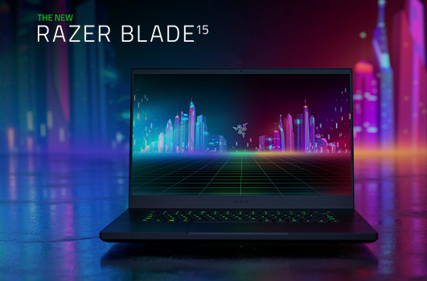

where no code newbie has gone before
Coding on the Razer 15 Base Model
It's a gaming latop, after all. Personally I would not have purchased it for myself, because I need a numberpad on my keyboard. But as a gift from my husband, I had to give it a try.
It turns out Razer 15 is not a SUPER great model for coding, IMHO. Keyboard layout is awkward, its more for gamers who don't need to type a lot. There's no Home/End key. I really miss numpad/num lock. I use ALT codes a lot like ALT NUM3 for hearts, ALT NUM7 for bullet points, etc. So now I can't do that without remapping my keyboard. Battery life is disappointing, seems only a few hours (although my old Acer Aspire E15 was down to about 5 min of battery life so it's a step up). I got all excited because I thought it came with a power brick but it's just a huge ac adapter! And the fan gets super loud sometimes, I'm still uninstalling the bloatware. Speakers are really great, though. Overall, the performance is very awesome, running as many apps as I want, with multiple tabs open, and Zoom running. Ubuntu in VirtualBox runs very smoothly, no issues so far.
First-world problems
So I have to either
- Buy an external keyboard
- re-map some keys at least for home/end functions
- return the laptop.
Since I don't want to hurt my husband's feelings by returning it, he's a sensitive guy, I'll just go for the re-mapping keys first.
One thing I've already learned is that Mac and Windows home/end keys have different behavior. The Razer has its own software for remapping keys. It's very sleek-looking, but when I changed the Ins and Del buttons to SHIFT+Ins = home and SHIFT+Del = end, I was disappointed to find that "end" to the Razer folks means "jump to the end of the file", not the end of the line! Apparently they are copying the Mac style in this regard. So that does not work for me. I used SharpKeys remapping tool instead, and set it to the F2 and F4 keys, since those keys don't seem to do anything. Now I can't use ALT+F4 to close applications, but that will have to do for now. EDIT: Holding "fn" + "<" or ">" arrow keys will jump to the start or end of a line!